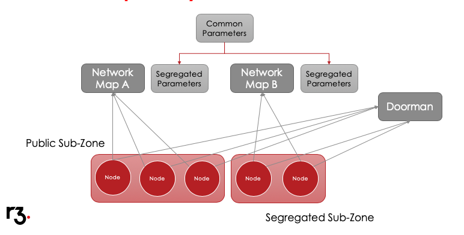

Corda Network Considerations
Corda Network Parameters
There is a set of parameters that all Nodes on the network must agree on in order to interoperate. These are listed below.
- minimumPlatformVersion
The minimum platform version that the nodes must be running. Any node which is below this will not start.
- notaries
List of identity and validation type (either validating or non-validating) of the notaries which are permitted in the compatibility zone.
- maxMessageSize
Maximum allowed size in bytes of an individual message sent over the wire. Note that attachments are a special case and may be fragmented for streaming transfer, however, an individual transaction or flow message may not be larger than this value.
- maxTransactionSize
Maximum allowed size in bytes of a transaction. This is the size of the transaction object and its attachments.
- modifiedTime
The time when the network parameters were last modified by the compatibility zone operator.
- epoch
Version number of the network parameters. Starting from 1, this will always increment whenever any of the parameters change.
- whitelistedContractImplementations
List of whitelisted versions of contract code. For each contract class there is a list of SHA-256 hashes of the approved CorDapp jar versions containing that contract. Read more about Zone constraints here API: Contract Constraints
- eventHorizon
Time after which nodes are considered to be unresponsive and removed from network map. Nodes republish their NodeInfo on a regular interval. Network map treats that as a heartbeat from the node.
- packageOwnership
List of the network-wide java packages that were successfully claimed by their owners. Any CorDapp JAR that offers contracts and states in any of these packages must be signed by the owner. This ensures that when a node encounters an owned contract it can uniquely identify it and knows that all other nodes can do the same. Encountering an owned contract in a JAR that is not signed by the rightful owner is most likely a sign of malicious behaviour, and should be reported. The transaction verification logic will throw an exception when this happens.
Flag Days
Network parameters are distributed alongside the network map in a separate file stored locally by each node.
From time to time the Corda Network Operator (R3) will need to update parameters, for example if a new notary is added.
The current update process is a 3 step operation.
- Day 1 Publicise the intended changes
- Day 1-N Collect node acceptances
- Day N* Update the central file and distribute
On distribution of the updated parameters, Corda 3.X design forces all nodes to stop and restart to accommodate them. Restarting the node is conditional upon acceptance.
Flag Day Communicatons
The Corda Network Operator will ensure customers are fully aware of impending and in-flight network parameter changes:
- Forward Calendars
- Publicise 12 month forward calendar and explanatory notes for next update:
- Production calendar on https://corda.network
- UAT calendar on https://docs.corda.net
- Event Communications
- Announcement day explanatory email to:
- Customer node operators (contact email address as supplied in original Certificate Signing Request or as amended by email to doorman@r3.com or uatdoorman@r3.com.
- Customer business operations contacts (advised during implementation projects)
- Business network operator key contact (as defined in service agreement).
- Pre-execution email to the same contacts 3 business days ahead of update to confirm go ahead.
- Publicise on Support Service Desk and cascade to customer support contacts.
Segregated Zones
Detail on the thinking and concepts around what a segregated sub-zone is can be found here : https://groups.io/g/corda-network/topic/design_proposal_for/28792765?p=,,,20,0,0,0::recentpostdate%2Fsticky,,,20,2,0,28792765
Here are the basis goals of a Segregated Sub Zone:
The ability to hive off members of the business network into a private enclave
The ability to cloak the members of the business network
- The ability to operate “exclusive” notary services
That is where the notary is not whitelisted globally and is operated to the standard deemed acceptable by the BNO, not the Zone operator and members (as per those in the global whitelist)
The ability to operate “private” notary service
That is where the notary can exist in the global whitelist but is restricted to notarisation of specific State types The ability to operate non whitelisted, “less universally trusted”, notaries. The ability to operate their own Compatibility Zone.
Segregated sub-zones only share the Identity Operator service. Each sub-zone therefore has its own independent network map and set of network parameters
Sub-zones allow more flexibility in setting network parameters as each zone is able to have its own settings
Sub-zones will be able to opt out of specific events* where:
- The parameters are not used in their business network(s) – e.g. for contract constraints or private notaries
- Opting-out does not compromise the sub-zone’s long term plan to join the public zone
- It should be noted however, the more sub-zones diverge in parameter settings over time the harder it will be to merge back in to the public zone in future
- Segregated sub-zones capability is estimated to be available in Corda Network Q3 2018
- Production will follow after successful customer test in UAT
The diagram below outlines the the overview of SSZ.
{kind=link}
Constraints
- Sub-Zones must be mergeable
- No nodes (including notaries) can exist in more than one sub-zone
- There must be no asymmetry of identification
- The identity service for sub-zones must be managed by a single Doorman
- Should require no changes to the Corda Node
- Notaries will not exist in multiple sub-zones